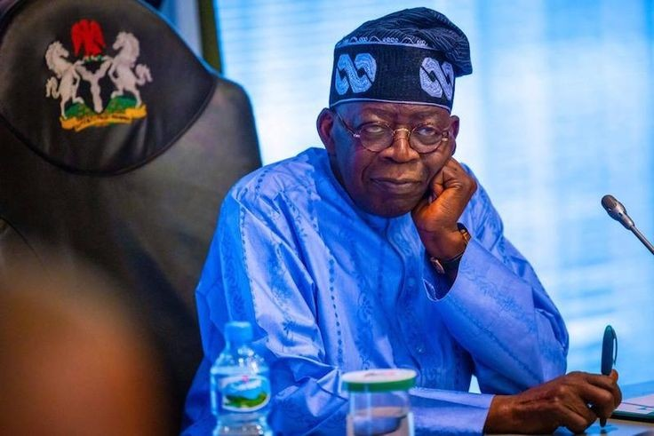

Since assuming office as President of the Federal Republic of Nigeria, Bola Ahmed Tinubu has positioned his administration around a broad reform agenda aimed at stabilizing theconomy, improving infrastructure, and strengthening national security. Branded under the “Renewed Hope” initiative, the government says its policies are designed to lay a stronger foundation for long-term growth and development. Economic Reforms and Fiscal Restructuring<> One of the administration’s earliest and most consequential moves was the removal of the long-standing petrol subsidy. The policy, while controversial, was presented as a necessary step to reduce fiscal pressure on the federal government and redirect funds into public services and infrastructure. Officials argue that the subsidy removal has improved transparency in public finance and created room for state governments to receive higher allocations. The administration has also introduced foreign exchange reforms aimed at unifying exchange rates and attracting foreign investment into the Nigerian economy. Government representatives maintain that these measures are intended to stabilize macroeconomic conditions, improve investor confidence, and set Nigeria on a path toward sustainable economic expansion. Infrastructure Development Infrastructure has remained a key focus area. The Tinubu administration has continued major road and rail projects across the country, emphasizing connectivity as a catalyst for commerce and regional integration. Investments in power sector reforms and renewable energy initiatives have also been highlighted as part of efforts to boost electricity supply and industrial productivity. In addition, the government has reiterated its commitment to housing development programs and urban renewal initiatives to address accommodation deficits in major cities.

Under the Renewed Hope framework, the administration has pledged to expand social intervention programs aimed at vulnerable citizens. Conditional cash transfers, small business grants, and youth-focused empowerment initiatives have been cited as tools to cushion the effects of economic reforms and stimulate grassroots development.
The government has also emphasized job creation through entrepreneurship support, digital innovation hubs, and skills acquisition programs designed to prepare young Nigerians for opportunities in technology and emerging industries.
